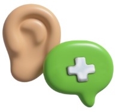
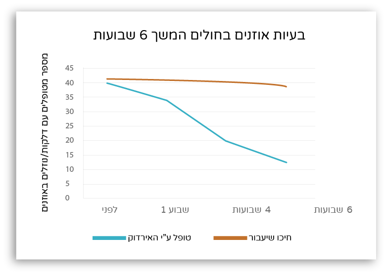
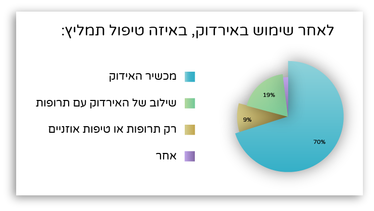
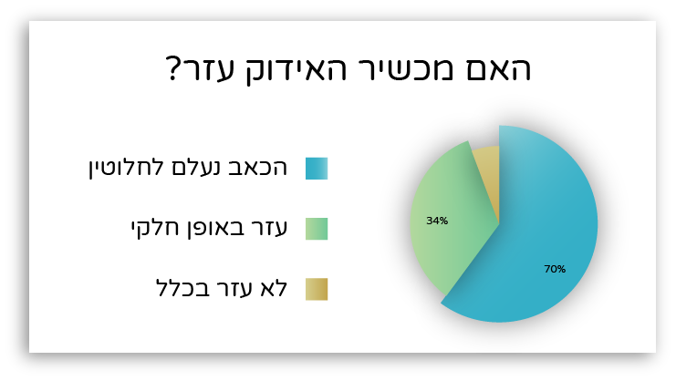

-
אני רופא/ה
הגעת לאתר ההדרכה של האירדוק, מכשיר שעוזר בהקלה על כאבי אוזניים. ברור לנו שחשוב לך להתעדכן בידע ובטכנולוגיות החדשות ביותר בתחום ואנחנו כאן כדי לסייע ולספק מידע מקיף ומקצועי עבור מכשיר האירדוק.
-
למה דווקא אירדוק?
אילו טיפולים חלופיים קיימים בשוק?
-
האנטיביוטיקה מחסלת את החיידקים שבתעלת האוזן ובכך משחררת את הסתימה ואת הנוזלים. שימוש מרובה באנטיביוטיקה גורם לגוף להסתגלות והיום יש מגמה של מניעת השימוש בה.
האירדוק הינו פתרון טבעי שאינו גורם להסתגלות הגוף.
-

ניתוח לטיפול בדלקת אוזן תיכונה כרונית (מעל 3 חודשים) או ירידה בשמיעה. הניתוח מתבצע בהרדמה מלאה על ידי רופא/ה אף אוזן גרון. במהלך הניתוח יוצרים חריץ בעור התוף ומחדירים צינורית קטנה שמנקזת את הנוזלים.
האירדוק אינו פולשני ויכול להוות תחליף לניתוח כפתורים.
מכשיר לטיפול בנוזלים באוזניים, סינוסיטיס ועוד. המכשיר מזרים אוויר בלחץ מבוקר דרך הנחיר לתוך האוזן התיכונה כדי לאוורר את האוזן התיכונה ולייבש נוזלים שהצטברו בה.
עלותו של האירדוק נמוכה יותר ביחס למתחרים והוא לא פחות יעיל.
כ-75% מהילדים/ות
סובלים מדלקות אוזניים לפחות פעם אחת בחייהם. בכל שנה, כחצי מיליון ילדים/ות מבקרים רופא/ת ילדים או רופא/ת אף אוזן גרון בשל בעיות באוזניים. דלקות אוזניים יכולות לגרום לכאב משמעותי, אי נוחות ואף לירידה בשמיעה.
-
נא להכיר: מכשיר האירדוק
אפשר לסובב את המכשיר וללחוץ על הנקודות השונות כדי להכיר את מבנה האירדוק
יש להסביר למטופל/ת
מכשיר האירדוק הינו מכשיר לא פולשני שעוצב על מנת לפתוח את תעלת האוזן (צינורית האוסטכן) ולשחרר את הנוזלים הכלואים שמאחורי עור התוף אשר גורמים לכאב ודלקות אוזניים באוזן התיכונה. ברוב המקרים הכאב נגרם כתוצאה מלחץ של הנוזלים ואוויר הכלוא באוזן התיכונה ולוחץ על עור התוף.
כעת נלמד איך לתפעל את האירדוק צעד אחר צעד
תוצאות המחקר שנעשה על האירדוק
-
מטופלים שהשתמשו באירדוק דיווחו על הקלה משמעותית בכאב, הפחתה בנזילת נוזלים מהאוזן התיכונה ומתח מופחת בעור התוף. סקר שביעות רצון שנערך עם לקוחות אירדוק הראה כי 94% מהמשתמשים חוו הקלה בכאב בעת השימוש, ו-89% מהם ישתמשו שוב באירדוק לטיפול בדלקת אוזניים וכאבי אוזניים.
- 
- 
-
מאושר ע"י משרד הבריאות ו - FDA
אירדוק עבר את כל המבחנים המחמירים של משרד הבריאות הישראלי והאמריקאי והוכח כיעיל לכאבי אוזניים -
לפרטים נוספים על המחקר שנערך על האירדוק
- 